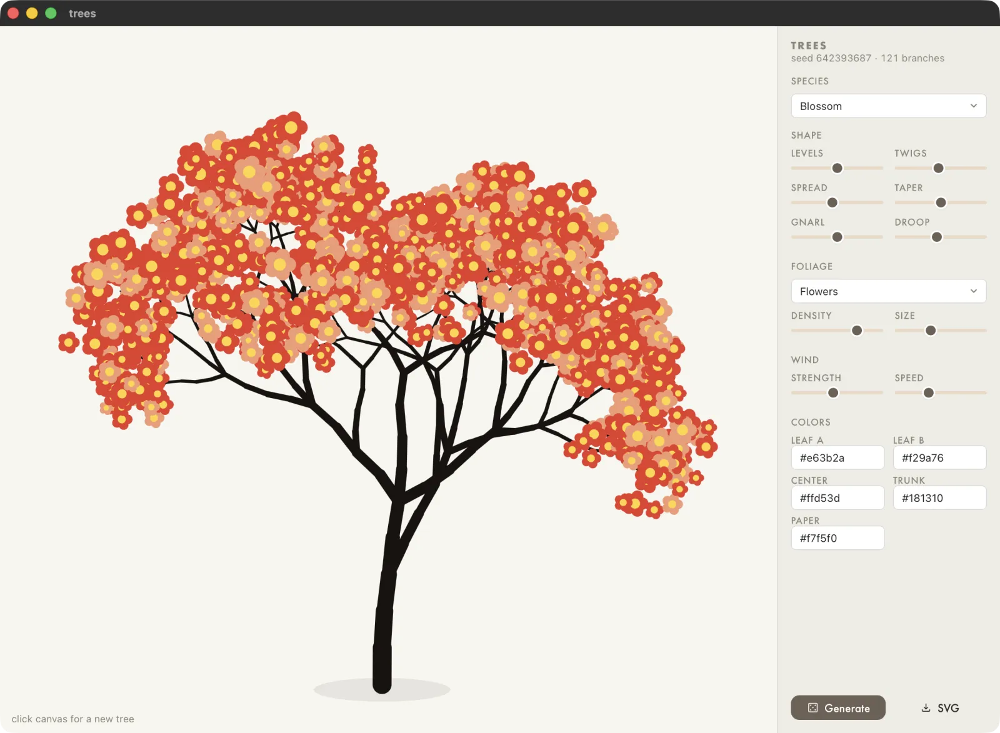

Trees
V.0.1
A stylized tree generator. I want to add some art to my UI, but also want something different from static illustrations or icons. Fable made me this in one turn from a reference image.

V.0.1
A stylized tree generator. I want to add some art to my UI, but also want something different from static illustrations or icons. Fable made me this in one turn from a reference image.